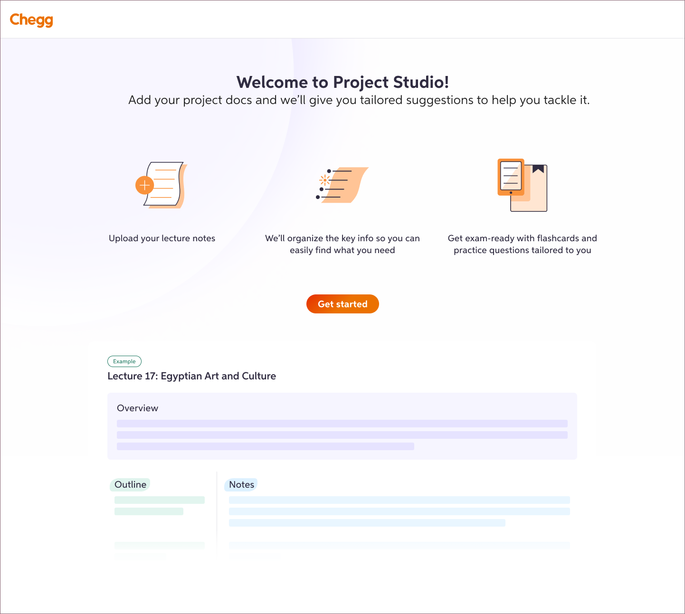
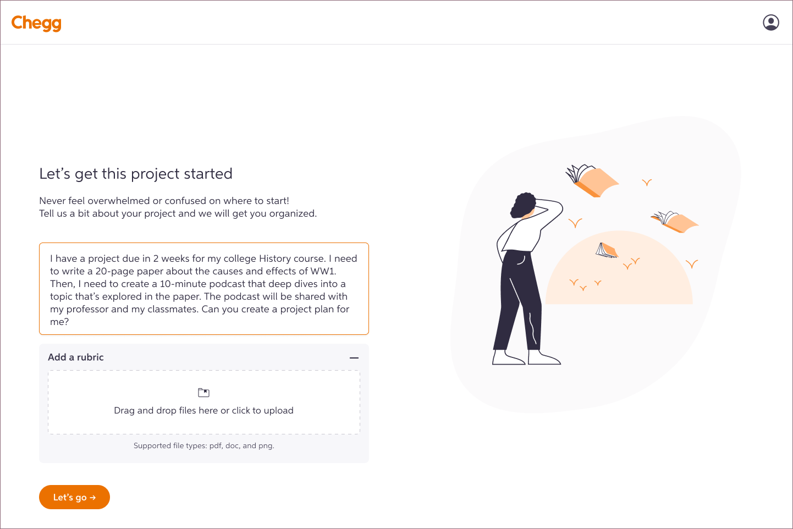
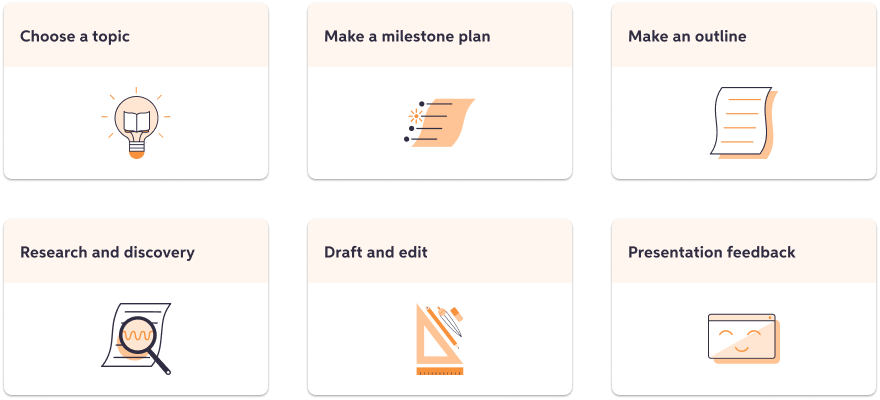

Designing an MVP for Chegg’s AI-powered project assistant
Before...

...After
Introduction
Context
Chegg is a popular subscription-based homework help platform for 8+ million college students worldwide.
ChatGPT explodes onto the scene and directly disrupts Chegg’s core business. In response, Chegg pivots to incorporate generative AI onto their platform, developing a suite of Personal Learning Assistant tools designed to support every aspect of a college student’s academic journey. One such tool, is the “Project Helper”.

I inherited the early concepts of the project helper tool. While high level functionality had been set up for me, I was brought in to help prioritize and iterate on an MVP that would be released in beta to a limited audience to collect more feedback from our users.
Problem to be solved
An opportunity to help students more effectively
As part of a larger study on academic journeys, we found that students struggle to effectively research and complete their papers, projects, and presentations. This particular tool would help students better manage their project work - while assisting with research, with integration into the Chegg ecosystem.

How can AI help?
We can leverage generative AI functionality to make it easier to:
- Parse and organize details from project documents, such as requirements and grading rubrics
- Generate unique ideas for topics.
- Research existing sources and recommend new sources to cite.
Userflow
Bringing clarity to disorganized concepts
One of my challenges coming was making sense of all the work that had been done, and bringing clarity on how each key functionality would work together to help students with their projects. I put together a user flow to better visualize the experience and used this artifact in brainstorming and planning discussions with my partners.

Prioritization
How we prioritized MVP functionality.
With a clear deadline set for a beta release, we decided to focus engineering and design efforts on core functionality that would enable other proposed features in a future release. The goal with the beta, would be to gather insight and data from Chegg users, in a realistic setting to inform our next set of priorities.

Design Exploration
Key concept #1
File Upload
One of my challenges coming was making sense of all the work that had been done, and bringing clarity on how each key functionality would work together to help students with their projects. I put together a user flow to better visualize the experience and used this artifact in brainstorming and planning discussions with my partners.
Key concept #2
Dashboard
One of my challenges coming was making sense of all the work that had been done, and bringing clarity on how each key functionality would work together to help students with their projects. I put together a user flow to better visualize the experience and used this artifact in brainstorming and planning discussions with my partners.
Key concept #3
Topic Helper
One of my challenges coming was making sense of all the work that had been done, and bringing clarity on how each key functionality would work together to help students with their projects. I put together a user flow to better visualize the experience and used this artifact in brainstorming and planning discussions with my partners.
Key concept #4
Research Helper
One of my challenges coming was making sense of all the work that had been done, and bringing clarity on how each key functionality would work together to help students with their projects. I put together a user flow to better visualize the experience and used this artifact in brainstorming and planning discussions with my partners.
Outcomes
MVP
Title here
Summary of the project outcomes and impact. What were the key results and learnings?